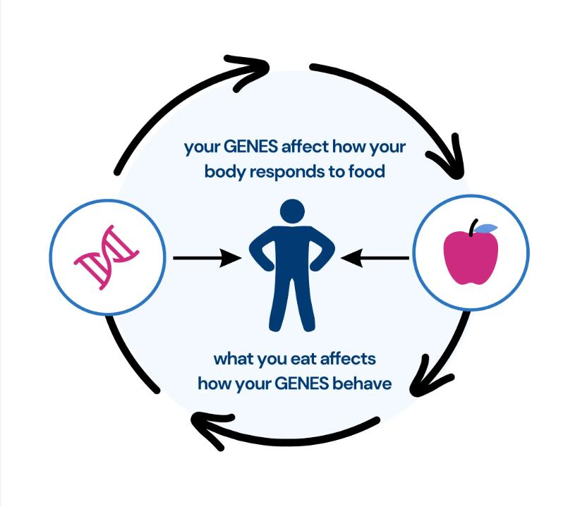

Vacha Patel
1580 Barnett Shoals Road, Apt 510, Athens, GA 30605 📞 (309) 532-6713 ✉️ vacha.patel@uga.edu
Undergraduate researcher passionate about genetics and bioinformatics data analysis.
Education
- University of Georgia
- 3.95 / 4.00
- Bachelor of Science in Genetics
- May 2027
Honors and Awards
- Dean's List
- 2023 – 2026
- Classic City Scholarship
- 2023 – Present
Skills
- Laboratory Techniques
- PCR, Western Blotting, ChIP-seq
- Programming Languages
- Python, R, JavaScript, HTML/CSS
Leadership and Experience
Projects
Poster Presentation
- Summarized research findings on chromatin regulation and gene expression
- Created data visualizations
- Presented at CURO Symposium
Epidemiological Data Analysis

- Analyzed genetic and epidemiological datasets using R
- Cleaned and filtered raw demographic and genetic data for statistical analysis
- Identified significant associations between genetic variants and disease outcomes
ChIP-seq Bioinformatic Pipeline
- Processed raw high-throughput sequencing reads and mapped alignments to reference genomes
- Generated normalized BigWig coverage tracks to visualize and analyze enriched ChIP-seq peaks